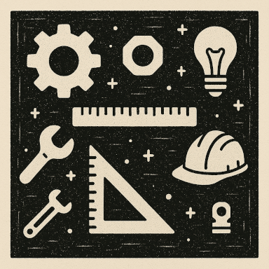

Engineering

Design & Problem-Solving
STEAM Education
Engineering Programs
Engineering programs foster creativity, critical thinking, and hands-on problem-solving skills. Encouraging young learners to design, build, test, and refine solutions to real-world challenges. Through the engineering design process, young learners identify problems, brainstorm ideas, create prototypes, and iterate on their designs. This practical approach to learning helps develop resilience, teamwork, and a growth mindset while building foundational knowledge in engineering principles.
Areas of Focus
- Mechanical Engineering
- Civil Engineering and Architecture
- Electrical Engineering
- Environmental Engineering
- Design Thinking
Engineering Listings
- Museum of Science YES & Engineering is Elementary (EiE) Program Boston MA yes.mos.org
- MIT Introduction to Technology, Engineering, and Science (MITES) Cambridge MA mites.mit.edu
- Worcester Polytechnic Institute (WPI) STEM Education Center Worcester MA wpi.edu/academics/stem-education-center
- University of New Hampshire Outreach Program (Tech Camp & EPIC) Durham NH ceps.unh.edu/outreach
- Maine Engineering Promotional Council (MEPC) Annual Engineering Expo Orono & Gorham ME engineeringme.com
- ECHO Leahy Center for Lake Champlain Virtual STEM Academy Burlington VT echovermont.org
- Boston Society of Civil Engineers Section (BSCES) Outreach Programs bsces.org/outreac
- Tufts University Center for Engineering Education & Outreach Workshops for Kids Medford MA ceeo.tufts.edu
- Harvard SEAS Engineering Outreach & Community Programs Cambridge MA seas.harvard.edu
- Engineering Ambassodors at UConn Community Programs Storrs, CT ambassadors.engr.uconn.edu
- Roger Williams University Summer Camps Bristol RI rwu.edu
- STEM Beginnings Worcester & Shrewsbury MA stembeginnings.com
- New England Sci-Tech Natick MA nescitech.org
- Engineering for Kids MetroWest MA & Regional NY engineeringforkids.com
- Dartmouth Center for the Advancement of Learning Hanover NH dcal.dartmouth.edu
- UVM Extension 4-H Science Programs Burlington VT uvm.edu/extension/youth
- The Robo Hub Cambridge MA therobohub.com
- National Inventors Hall of Fame Youth Programs Regional Locations invent.org
- BostonTechMom Boston MA bostontechmom.com/
- Center for the Advancement of STEM Education (CASE) Bridgewater MA bridgew.edu